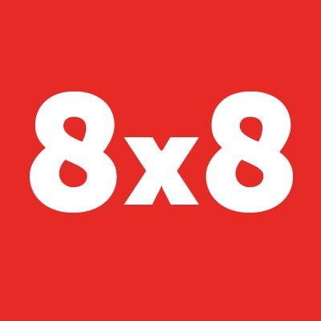

What I do/did
Experience
-

Software Engineer - Applicaton Development
8x8 Inc.
Design and Develop Billing Manager API's which can be used by the external applications Write designed, testable, efficient and reusable code (using REST API) Manage individual project priorities, deadlines and deliverables. Java web development using JSP, Servlet, Struts, HTML, CSS & Multi-threaded java programming. Write complex SQL Queries, Stored Procedures
-

Software Enginer - Cisco Intercloud Services
Cisco
Analyze workloads and data association models Develop and build reports to monitor application defined KPIs Contribute to engineering projects spanning several engineering groups. Java web development using JSP, Servlet, Struts, HTML, CSS & Multi-threaded java programming. Write complex SQL Queries, Stored Procedures Collaborate with other Cisco team members to deploy user management application into production. Build and automate routines for data cleaning and update for production environment Ensure standards and procedures are being adhered to. Build and automate routines for data cleaning and update for production environment in python Worked on UI improvement of web portal (cloud.cisco.com) using Bootstrap and AngularJS. Worked on Mobile Version (Android) of the portal. Developed Support Portal (software as a service) application to support cisco cloud application using JAVA, Spring, RESTful web
-
Software Engineer - Full Stack
Stealth Startup
Create web application using MEAN stack Work with team located remotely Worked on converting Windows 8 App to Web Application Developed the application using MEAN stack
-
Software Engineer - Data
Insnap (Acquired by Honest Inc.)
Create web application using MEAN stack Work with team located remotely Worked on converting Windows 8 App to Web Application Developed the application using MEAN stack Automating data ingestion and processing (ETL Extract,Transform and Load); Automating code deployment using Chef/Puppet/Docket/AWS tools Ensuring monitoring, profiling, debugging of cloud infrastructure; Maintain and adding features in Data collection APIs;. Created copier for Amazon S3 integrated with Loggly and push notification for failures Implemented JSON to CSV convertor in Scala Created dashboard using Tableau and d3.js Worked with Spark to ingest incoming data from client side into hive Created RESTful web services in Java Created internal web application using Node.js,Angular.js,JQuery and Bootsrap.
-
Be Part
Of My
Journey!